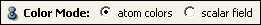

Ports

Colormap
Transparency
Color Mode

Coloring

For an explanation of the four ports above, see the description in the general section on display of molecules.
The BondAngleView offers an alternative to the MoleculeView. This viewing module, however, does not display atoms and bonds but, as the name suggests, bond angles, i.e., for every three atoms connected by two bonds a triangle will be shown. The vertex colors are linearly interpolated across the triangle. Apart from coloring the molecule as is done in the MoleculeView, the bond angles can be colored according to a specified color field, e.g., the electrostatic potential, and a colormap. Here, in addition to interpolating the colors, texture mapping can be applied which interpolates the texture coordinates.
Colormap that is used to map values of discrete attributes, like integers and strings, to colors.
For an explanation of the four ports above, see the description in the general section on display of molecules.